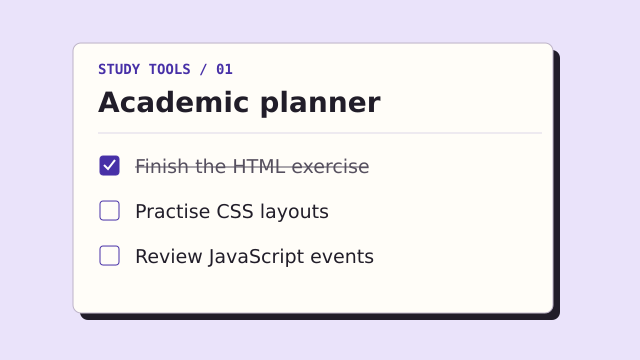
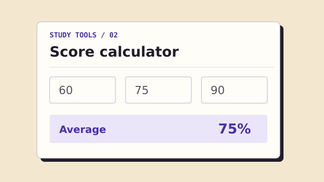
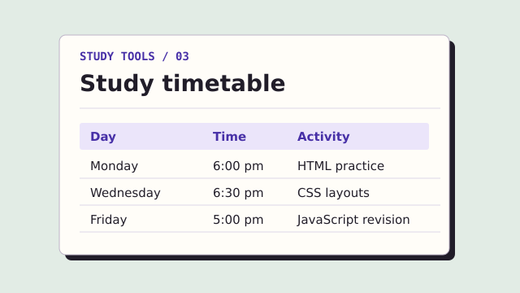

01 / JavaScript and browser storage
Academic planner
A checklist for assignments and study sessions. Add a task, tick it off when you’re done, and remove it when you no longer need it.
Open the plannerSelected work
Three small tools for keeping track of tasks, scores and study sessions. You can try each one here.

01 / JavaScript and browser storage
A checklist for assignments and study sessions. Add a task, tick it off when you’re done, and remove it when you no longer need it.
Open the planner
02 / Forms and calculations
Enter three equally weighted percentage scores to find their average. For example, 60, 75 and 90 give an average of 75%.

03 / Tables and filtering
A weekly timetable with sample study sessions. Choose a day to see what’s on the schedule.
| Day | Time | Activity |
|---|---|---|
| Monday | 6:00 pm | HTML practice |
| Wednesday | 6:30 pm | CSS layouts |
| Friday | 5:00 pm | JavaScript revision |
A QUICK WALKTHROUGH
A silent tour of the planner, calculator and timetable.